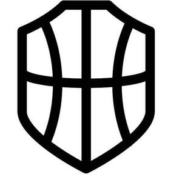

Trade Mark Journal No.2026/011 13 March 2026
UK00004346200 26 February 2026 (9,25,28,35,38,41)

- Class 9
- Downloadable software; Smartphone software applications, downloadable; Downloadable computer software for use as a digital wallet; Software downloadable from the internet; Downloadable software applications; Downloadable computer software applications; Downloadable software applications for mobile phones; Computer software platforms, recorded or downloadable; Downloadable application software; Content access software; Downloadable electronic game software for wireless devices; Digital books downloadable from the Internet; Downloadable software in the nature of a mobile application; Downloadable digital photos; Downloadable digital assets; Downloadable computer game software; Downloadable mobile applications; Interactive video software; Interactive software.
- Class 25
- Basketball sneakers; Basketball shoes; Athletic uniforms; Jerseys [clothing]; Jackets being sports clothing; Clothing for sports; Sports clothing; Athletic clothing; Sportswear; Clothing; Footwear for sports; Sports garments; Sneakers [footwear]; Footwear for sport; Footwear for use in sport; Clothing for leisure wear; Sports shirts.
- Class 28
- Basketball hoops; Basketball backboards; Basketball goals; Basketball nets; Arcade basketball shooting games; Basketball baskets; Tabletop basketball games; Basketball finger guard; Basketball backboards made of glass; Sports training apparatus; Basketballs; Sports equipment; Backboards for basketball.
- Class 35
- Online retail services for downloadable and pre-recorded music and movies; Promotion of sports competitions and events; Promotion of goods and services through sponsorship of international sports events; Promotion of goods and services through sponsorship of sports events; Business management of sporting clubs; Business management of sporting venues [for others]; Business management of sports people; Agency services for promoting sports personalities; Organisation of exhibitions and events for commercial or advertising purposes; Business management of sporting facilities [for others].
- Class 38
- Video broadcasting; Video, audio and television streaming services; Satellite broadcasting services relating to sporting events; Broadcasting of video and audio programming over the Internet; Broadcasting; Webcasting; Television broadcasting services; Broadcasting of television programs using video-on-demand and pay-per-view television services; Radio broadcasting services; Broadcast services; Interactive television and radio broadcasting; Television broadcasting; Audio, video and multimedia broadcasting via the Internet and other communications networks; Subscription television broadcasting; Cable television broadcasting services; Broadcasting of programmes via the internet; Broadcasting of television programmes.
- Class 41
- Sports coaching; Sports coaching services; Basketball instruction; Basketball camps; Coaching [training]; Sports tuition, coaching and instruction; Basketball camp services; Organising of basketball tournaments; Training of sports players; Production of basketball games and exhibitions; Sports refereeing and officiating; Sports club services; Sports and fitness; Teaching academy services; Academy services (Education -); Academy education services; Academies [education]; Coaching in the field of sports; Training of sports teachers; Entertainment in the nature of basketball games; Organization of sports competitions; Organisation of sports tournaments; Services for the organisation of sports events; Management of events for sporting clubs; Organisation of sporting competitions and sports events; Providing facilities for sporting events, sports and athletic competitions and awards programmes; Organising of sports and sports events; Entertainment services in the nature of sporting events; Coaching services for sporting activities; Sports entertainment services; Organising community sporting events; Sports and fitness services; Entertainment services relating to sport; Sporting education services.
LSB COACHING & TECHNICAL EDUCATION LIMITED